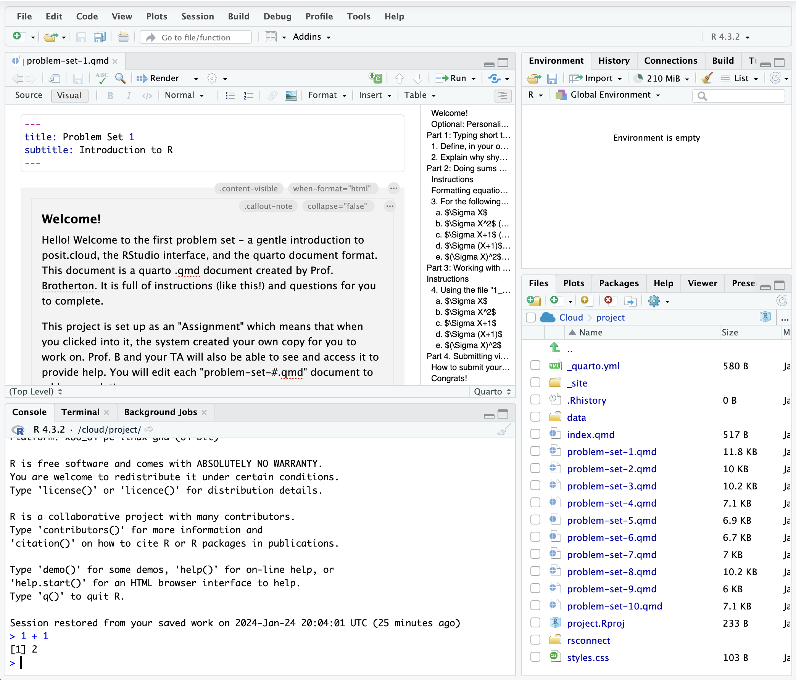
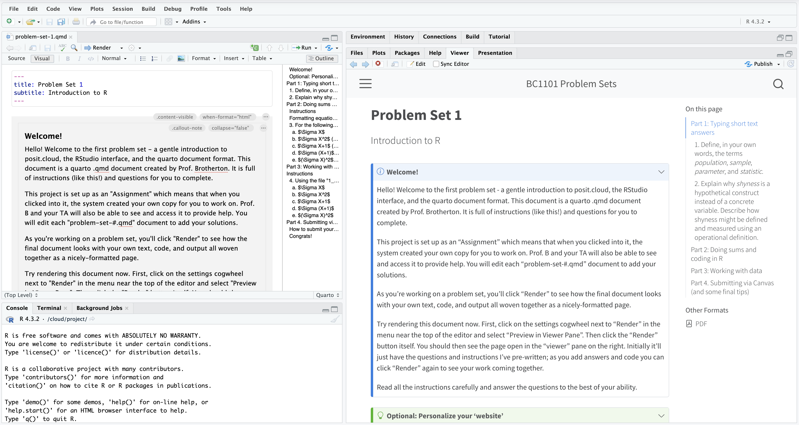
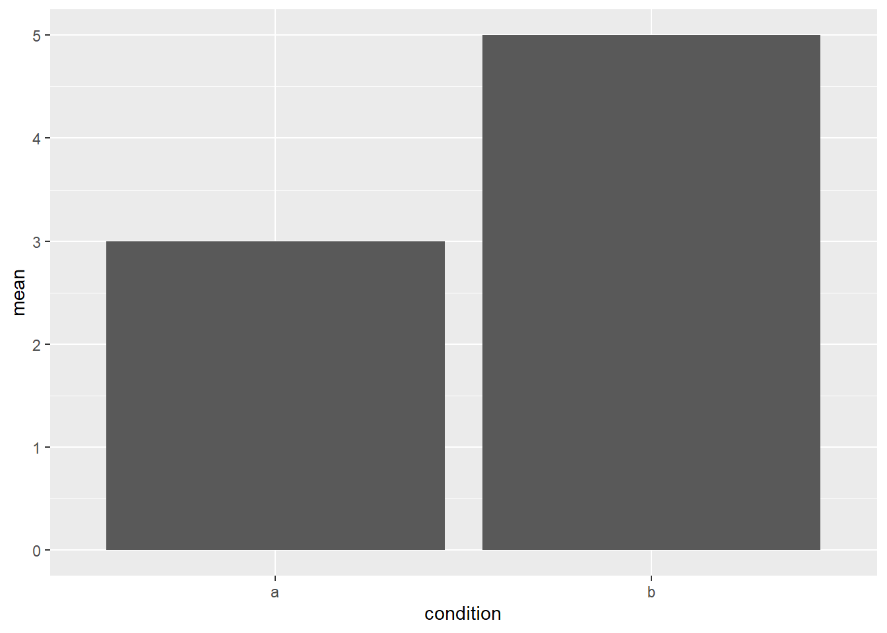

name <- thingRecitation
You will use posit.cloud to access problem sets as Quarto documents, using RStudio to write R code and answer questions. You’ll just need to sign up for a free account.
I’ll make the problem sets available in due course.
Wait, what are you talking about?
There are a few different names involved here, so to try and clear things up:
- R is a coding language for statistics and data analysis
- RStudio is a software interface for using R
- Posit is the name of the company that makes RStudio
- posit.cloud provides a way of using RStudio in your web browser
- Quarto is a document format which allows for code and text to be combined and nicely formatted as html webpages or pdf documents (or both!)
You can install R/RStudio/Quarto on your own computer for free and do things that way, but using posit.cloud simplifies things immensely.
The general workflow
R is a programming language well-suited to interactive data exploration and analysis. It is widely used for psychological research, which is why we’ll use it as our tool for learning and applying the statistical techniques covered in the lectures.
It might seem daunting if you’ve have no experience with coding, but the basic idea is that you have some data, like you are familiar with from a regular Excel or Google Sheets spreadsheet, and you perform operations on your data using functions a lot like you would in Excel/Sheets. For example, you might compute an average in Sheets by typing =AVERAGE(A1:A10). In R you might type mean(my_data$column_a). The specifics of the function names are different, but the basic idea is the same.
RStudio
RStudio is the interface we’ll use to write and run R code and see its output. The basic interface has 4 panels, each with a few tabs:

- Top-left: Code editor / data viewer
- You will edit your problem set document here
- You can run code within code chunks by clicking on a line of code and pressing
Ctrl/Cmd + Enteron your keyboard, or pressing the green “play” button at the top of the chunk
- Bottom-left: R console
- You can type code directly and run it by pressing enter.
- You won’t be saving your code as a document like when you type in in the editor, so this is useful for testing something simple out
- Top-right: Environment
- As you execute code you may be creating objects like sets of numbers of data.frames. Those objects will appear here.
- You can click the name of some objects, like data.frames, and it will open a view of the data as a tab in the editor pane
- Bottom-right: Files/folders, Plots, Viewer, help window
- You can navigate the file tree, and when you “Render” your document you will see how it looks as a fully-formatted web page.
Once you start working on problem sets, my recommended workflow is to “Render” your document frequently with “Preview in Viewer Pane” selected. That will give you something like this:

You’ll have the editable problem set .qmd open on the left, and an expanded preview of the rendered document on the right. That should make it easy to see questions and instructions on the right, and add your own code solutions and text on the left, re-rendering as you make changes to see your work reflected in the preview on the right.
Fundamentals of R
The problem sets include instructions and are designed to walk you through everything; no prior knowledge or experience is required. That said, here are some of the basics of working with R code to help you get started.
Assignment
R has a fancy assignment operator: <-.1 You assign things to a name by typing something like:
The thing there might be a set of numbers, an entire dataset, or something else. Giving it a name allows to you perform subsequent operations more easily, and choosing appropriate names makes your code easier to understand.
original_numbers <- 1:10
original_numbers [1] 1 2 3 4 5 6 7 8 9 10doubled_numbers <- original_numbers * 2
doubled_numbers [1] 2 4 6 8 10 12 14 16 18 20Functions
Almost everything happens inside functions.
mean(original_numbers)[1] 5.5mean(doubled_numbers)[1] 11You can also nest functions inside one another.
sqrt(mean(original_numbers))[1] 2.345208A function generally has one or more “arguments”, to which you supply parameters. For example, the mean() function’s first argument is the set of numbers you want to compute the mean of; in the previous examples original_numbers and doubled_numbers were the parameters I supplied. You don’t necessarily have to type the name of the argument, but it can be helpful. The seq() function, for example, produces a sequence of numbers according to three arguments, from, to, and by.
seq(from = 1, to = 10, by = 2)[1] 1 3 5 7 9When you don’t type the names of the arguments, R matches them by position, so this gives exactly the same output as the previous line of code:
seq(1, 10, 2)[1] 1 3 5 7 9You can get help with a function (to see what arguments it accepts, for example) by typing a question mark followed by the function name (without parentheses) in your console.
?meanRunning the code will bring up the function’s help documentation in RStudio’s Help pane.
Piping
You can string together different operations in a pipeline using the pipe operator: |>.2 The result of each line of code gets “piped” into the function on the next line as its first argument. For example, below I take some data (named my_data) and perform a series of operations, first changing its shape using pivot_longer(), then creating summary statistics for the mean and standard deviation separately by a grouping-variable, then I pipe the summary statistics into ggplot() to create a graph with a geom_col() layer for the geometry.
my_data |>
pivot_longer(everything(),
names_to = "condition",
values_to = "score") |>
summarize(mean = mean(score),
.by = condition) |>
ggplot(aes(x = condition, y = mean)) +
geom_col()
Et voilà, we have a serviceable graph of group means!
There’s a lot going on there, and the specifics will become clearer as you work on the problem sets. But using the pipe operator this way can make for relatively readable code.
Footnotes
Most other coding languages tend to use a boring
=for assignment. Sure it’s nice not having to type an extra character, but there’s a keyboard shortcut to quickly add an<-in RStudio: Option/Alt +-. And philosophically, the<-arrow conveys the inherent directionality of the assignment operation. The object is assigned to the name; the object and its name are not equal and so the=arguably gives a misleading impression of the two things being one and the same. (Also, to let you in on a secret,=also works for assignment in R.)↩︎If you’re looking at R code from elsewhere (e.g. looking up help online) you may see a different pipe:
%>%. The|>pipe, called the “native” pipe, was only included as a feature of base R relatively recently. Until then, the%>%pipe was provided by an external package (calledmagrittr. Get it?). In practice the pipes work similarly, so you can often just replace%>%with|>and it’ll work fine, but it’s worth being aware of.↩︎
{kind=link}